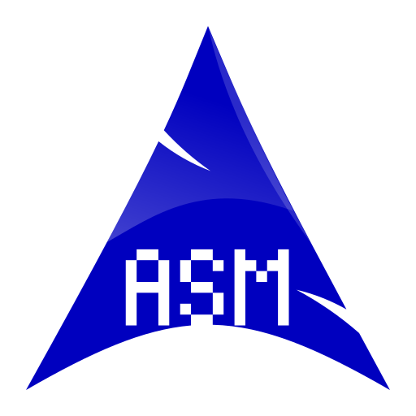

Je m'appelle Gaya, c'est un plaisir de vous accueillir sur mon site.
Je suis un grand passionné de développement informatique mais également de mathématiques !
Voir mes Projets Télécharger mon CVBonjour, je m'appelle Gaya BOUNDER, j'ai 20 ans. Je suis actuellement en deuxième année de BUT Informatique en parcours C : administration, gestion et exploitation des données. Passionné de mathématiques et d'ingénierie, j'ai toujours aspiré à travailler dans un domaine innovant. C'est pourquoi m'orienter vers l'informatique était la suite logique de mon parcours.
J'ai débuté mon parcours au Lycée Charles de Gaulle à Poissy, où j'ai obtenu mon baccalauréat spécialités Mathématiques et Sciences de l'Ingénieur avec mention. Par la suite, j'ai rejoint l'IUT d'Orsay Paris-Saclay en BUT Informatique, formation dans laquelle je suis très épanoui.
Je suis une personne très organisée qui aime l'assiduité. C'est pourquoi, en parallèle de mes études, je travaille en tant qu'alternant au Service Départemental d'Incendie et de Secours des Yvelines (SDIS78), en tant qu'Administrateur GED et BPM. J'accompagne le service de numérisation des processus dans un projet concret : la dématérialisation du dossier individuel agent. Je travaille avec les métiers RH dans l'objectif de satisfaire leurs besoins concernant l'application que nous développons. Je participe notamment à la création des formulaires, à la définition et au paramétrage de la GED, qui à terme remplacera le DIA papier. Je développe des petits scripts et des algorithmes permettant le dépôt automatique en GED des documents déposés par les agents. J'utilise pour cela l'application "Blueway" et le BPMN (Business Process Modeling and Notation), via des algorithmes orientés low-code à base d'appels d'API, de boucles, de conditions et d'optimisations.
Passionné de sport, j'ai pratiqué :
Football : 6 ans en club à Poissy dont 2 ans en régional
Volley-Ball : 1 an en classe de seconde
Boxe Anglaise : 1 an en classe de seconde
Ces expériences sportives m'ont appris la persévérance, le travail d'équipe et la gestion du stress.
Actuellement en cours de réalisation (2025-2026), ce projet ambitieux vise à développer un jeu multijoueur massivement local capable d'accueillir jusqu'à 200 joueurs simultanés (étudiants en amphithéâtre). Inspiré de Splatoon et de la Pixel War (r/place), le jeu oppose quatre équipes dans une compétition de contrôle de territoire via des vaisseaux contrôlés par smartphone.
Technologies : Moteur Godot 4, C# (.NET 8), Sockets TCP/UDP (bas niveau), Multithreading, Architecture Client-Serveur.
Mon rôle : J'ai pris en charge la gestion de projet et la planification (réalisation du WBS, diagrammes de PERT et Gantt). Côté technique, je participe au développement de l'architecture réseau bas niveau (sockets) pour gérer les connexions concurrentes et assurer la synchronisation en temps réel sans latence.
Au cours de ma première année, j'ai travaillé sur divers projets. J'ai notamment collaboré avec une équipe pour développer un jeu vidéo en C++. Cette expérience m'a appris à travailler efficacement avec une base de code partagée. Je suis devenu compétent avec GitHub pour gérer et partager du code. J'ai mis en œuvre le déplacement automatique des ennemis avec des motifs aléatoires et des systèmes de frontières pour contenir les joueurs dans les salles de niveau. L'objectif du jeu est simple : collecter toutes les pièces tout en évitant la mort pour gagner.

Durant ce projet en trinôme, nous avons installé et configuré un système de gestion de base de données (MariaDB) sur un Raspberry Pi 400. À partir d'une carte SD vierge, nous avons d'abord installé le système d'exploitation Raspberry Pi OS avant de configurer le SGBD.
Nous avons créé une base de données complète pour un système de réservation de camping, avec plusieurs tables relationnelles. Le projet incluait la gestion des utilisateurs, la configuration réseau et l'automatisation du démarrage des services.
Ce projet m'a permis d'acquérir des compétences en administration système Linux et en gestion de bases de données SQL, tout en travaillant en équipe selon une méthodologie rigoureuse. Nous avons été évalués sur la qualité de notre installation et via un rapport technique en anglais.


C++

C#

Python

HTML

CSS

ASM64

JAVA

PL/SQL
Français : Langue maternelle.
Anglais : Très bonnes bases techniques et professionnelles.
Espagnol : Bonnes notions me permettant d'échanger à l’oral et à l’écrit.
Vous pouvez me joindre via les moyens suivants :